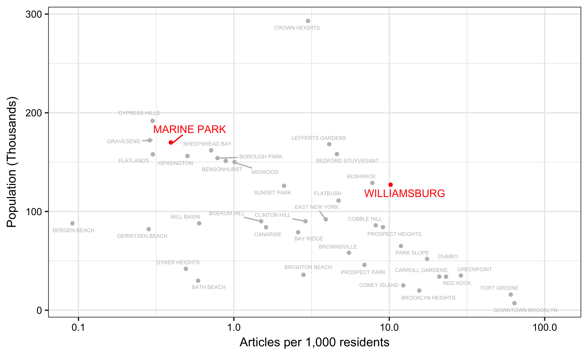

News Inequality: A Demo
By Hamdan Azhar, Cathy Deng, Christian MilNeil, Michael Morisy, Leslie Shapiro
This is a quick project built during the Misinfocon creative studio. See the data & code on GitHub.
The problem at hand
Media organizations often have blind spots in their coverage. Newsrooms naturally follow where they think the news is, chasing breaking news and covering human interest stories as they come to the attention of reporters and editors. But this natural inclination often leaves them open to missing stories or misappropriating resources without even realizing it. The amount - and type - of coverage that different neighborhoods get isn't always fair or ideal.
Surfacing patterns of inequality
While it’s hard to see these disparities on a day-to-day basis, over time they build up, leaving some neighborhoods over-covered or under-covered. Longer-term datasets can reveal patterns and help surface those blind spots.
In an ideal world, media organizations would participate in these forms of self-reflection - however, if that doesn't happen, public accountability & critique from outside parties can push media organizations to be more equitable in their reporting.
Why does this matter?
At Misinfocon, there's a lot of discussion about verifying facts and identifying what's true or false. However, this project shows that even facts, in aggregate, can be misleading. Misallocating attention is a form of misinformation.
Inequalities in coverage also impact public trust. How can you trust a news organization if you feel mis-represented or ignored?
Example #1: Williamsburg vs Marine Park
When most people think of Brooklyn, Williamsburg - the hipster capital of the world - is one of the first things to come to mind. However, very few people have heard of Marine Park, an old Italian and Irish neighborhood in South Brooklyn. Marine Park technically has more people than Williamsburg (170K versus 127K).
Disparities in amount of coverage
When we turned to two New York local news sites, we found Williamsburg coverage dwarfed Marine Park coverage. In the Gothamist, we found 330 articles mentioning Williamsburg versus 48 mentioning Marine Park. In DNAinfo, the spread was 1,298 versus 71 (which translates to a per capita density of 10.2 articles per 1,000 residents in Williamsburg versus 0.4 articles per 1,000 residents in Marine Park.)
Disparities in type of coverage
The types of stories being written about these two neighborhoods are also drastically different. Consider a wordcloud of headlines from each neighborhood from the Gothamist. In both neighborhoods, the top word is "man"; in Marine Park, however, the second and third most frequent words are "old" and "arrested." In Williamsburg, they're "new" and "bar."


Words used in headlines about Marine Park & headlines about Williamsburg.
All of these articles are reporting facts - however, in aggregate, factual stories can still paint an incomplete and misleading picture of the neighborhood.
Is it just these two neighborhoods?
We extended the above approach using DNAinfo to Brooklyn's 40 top neighborhoods and found tremendous disparity. On one end, we have the "news deserts" of South Brooklyn - Bergen Beach is the lowest with 0.1 article per 1,000 residents - while on the other, we have news oases such as Greenpoint (28.9 articles per 1,000 residents) and Fort Greene (60.5 articles per 1,000 residents).
Example #2: Towns in Southern Maine
We used data gathered from the Portland Press Herald, which recently started using WordPress tags on its local news stories.
This is a simple tally of the dataset's approximately 1500 tagged stories by municipality in Cumberland and York counties – the newspaper's primary coverage area. Portland has the most stories by far, and then there is a long tail.
Stories per capita
By normalizing the stories with population, we can see the places that get disproportionate coverage (the towns on the right side of the scatterplot). The graph shows us that many sparsely-populated towns get no coverage at all - the cluster at the left edge of the scatterplot. On the other side, we see some outliers that have been getting a lot of coverage, like Ogunquit, a tiny coastal town that's recently been embroiled in corruption allegations.
We can also see if stories per capita are correlated with other demographic factors. Here, it looks like there isn't much of a relationship between median income and coverage (yay!). But there also appears to be a negative relationship between a town's level of support for Donald Trump and the amount of news coverage they get. There are many confounding factors at play here, of course, but this could be an interesting topic for further research with a bigger dataset and a more sophisticated statistical model.